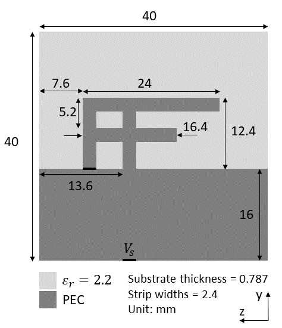
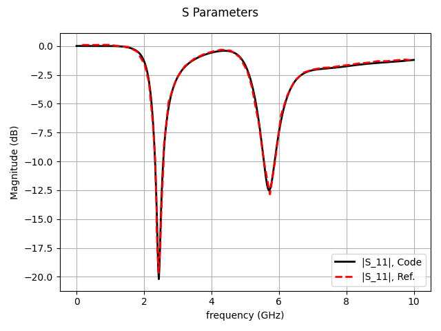
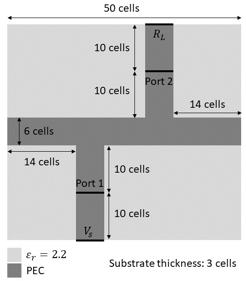
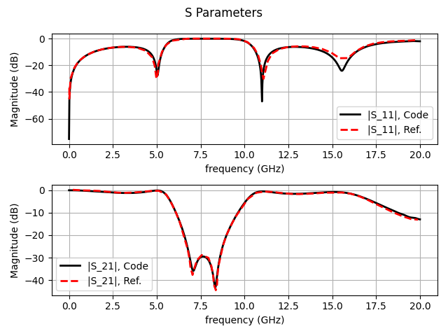

基于可微分FDTD的贴片天线S参数仿真

概述
本教程介绍MindSpore Elec提供的基于端到端可微分FDTD求解电磁正问题的方法。时域有限差分（FDTD）方法求解麦克斯韦方程组的过程等价于一个循环卷积网络（RCNN）。利用MindSpore的可微分算子重写更新流程，便可得到端到端可微分FDTD。相比于数据驱动的黑盒模型，可微分FDTD方法的求解流程严格满足麦克斯韦方程组的约束，精度与传统数值算法精度相当。
本例面向GPU处理器，你可以在这里下载完整的样例代码： https://gitee.com/mindspore/mindscience/tree/r0.2.0/MindElec/examples/AD_FDTD/fdtd_forward
麦克斯韦方程组
有源麦克斯韦方程是电磁仿真的经典控制方程，它是一组描述电场、磁场与电荷密度、电流密度之间关系的偏微分方程组，具体形式如下：
其中\(\epsilon,\mu,\sigma\)分别是介质的绝对介电常数、绝对磁导率、电导率。\(J(x, t)\)是电磁仿真过程中的激励源，通常表现为端口脉冲的形式。本案例的端口为线端口，可以表示为：
其中\(x_0\)和\(x_1\)分别为先端口的起始位置和终止位置，\(H(x)\)为阶跃函数，\(g(t)\)为脉冲信号的函数表达形式。
仿真流程
MindSpore Elec进行天线S参数仿真的具体流程如下：
定义天线结构、激励端口位置与类型、采样端口。
定义激励源时域波形。
构建神经网络。
求解并评估结果。
贴片倒F天线的S参数仿真
本案例对贴片倒F天线的S参数进行仿真。天线结构如下图所示。

导入依赖
导入本教程所依赖模块与接口：
import os
import argparse
import numpy as np
from src import estimate_time_interval, compare_s
from src import CFSParameters, Gaussian
from src import Antenna, SParameterSolver
from src import GridHelper, UniformBrick, PECPlate, VoltageSource
from src import VoltageMonitor, CurrentMonitor
from src import full3d
定义激励源时域波形
本案例的激励源时域波形为高斯脉冲。FDTD采用蛙跳格式分别更新电场和磁场，而本案例的激励源为电压源，因此应计算半时间步上的激励源时域波形值。
def get_waveform_t(nt, dt, fmax):
"""
Compute waveforms at time t.
Args:
nt (int): Number of time steps.
dt (float): Time interval.
fmax (float): Maximum freuqency of Gaussian wave
Returns:
waveform_t (Tensor, shape=(nt,)): Waveforms.
"""
t = (np.arange(0, nt) + 0.5) * dt
waveform = Gaussian(fmax)
waveform_t = waveform(t)
return waveform_t, t
定义天线结构、激励端口、采样端口
用户可根据天线设计图，在网格上自定义天线结构、激励端口和采样端口。首先，根据剖分尺寸、天线总尺寸、PML层厚度、空气层厚度，程序自动生成FDTD网格grid；然后，用户可根据天线设计图，借助程序提供的各种组件在grid上定义天线结构、激励端口和采样端口，例如介质基板（均匀介质块UniformBrick）、金属贴片（PECPlate）、电压源（VoltageSource）、电压采样端口（VoltageMonitor）和电流采样端口（CurrentMonitor）。
def get_invert_f_antenna(air_buffers, npml):
""" Get grid for IFA. """
cell_lengths = (0.262e-3, 0.4e-3, 0.4e-3)
obj_lengths = (0.787e-3, 40e-3, 40e-3)
cell_numbers = (
2 * npml + 2 * air_buffers[0] + int(obj_lengths[0] / cell_lengths[0]),
2 * npml + 2 * air_buffers[1] + int(obj_lengths[1] / cell_lengths[1]),
2 * npml + 2 * air_buffers[2] + int(obj_lengths[2] / cell_lengths[2]),
)
grid = GridHelper(cell_numbers, cell_lengths, origin=(
npml + air_buffers[0] + int(obj_lengths[0] / cell_lengths[0]),
npml + air_buffers[1],
npml + air_buffers[2],
))
# Define antenna
grid[-3:0, 0:100, 0:100] = UniformBrick(epsr=2.2)
grid[0, 0:71, 60:66] = PECPlate('x')
grid[0, 40:71, 75:81] = PECPlate('x')
grid[0, 65:71, 21:81] = PECPlate('x')
grid[0, 52:58, 40:81] = PECPlate('x')
grid[-3:0, 40, 75:81] = PECPlate('y')
grid[-3, 0:40, 0:100] = PECPlate('x')
# Define sources
grid[-3:0, 0, 60:66] =\
VoltageSource(amplitude=1., r=50., polarization='xp')
# Define monitors
grid[-3:0, 0, 61:66] = VoltageMonitor('xp')
grid[-1, 0, 60:66] = CurrentMonitor('xp')
return grid
值得注意的是，在网格grid上定义天线结构、激励端口位置和采样端口位置时，用户既可以通过网格编号直接指定物体位置，也可以通过空间坐标指定物体位置。不过，用户需要注意通过空间坐标指定物体位置可能引入建模误差。例如，用户可以混用网格编号和空间坐标定义天线结构：
...
# Define antenna
grid[-0.787e-3:0, 0:40e-3, 0:40e-3] = UniformBrick(epsr=2.2)
grid[0, 0:28.4e-3, 24e-3:26.4e-3] = PECPlate('x')
grid[0, 16e-3:28.4e-3, 30e-3:32.4e-3] = PECPlate('x')
grid[0, 26e-3:28.4e-3, 8.4e-3:32.4e-3] = PECPlate('x')
grid[0, 20.8e-3:23.2e-3, 16e-3:32.4e-3] = PECPlate('x')
grid[-0.787e-3:0, 16e-3, 30e-3:32.4e-3] = PECPlate('y')
grid[-0.787e-3, 0:16e-3, 0:40e-3] = PECPlate('x')
...
构建神经网络并求解
定义可微分FDTD网络，然后定义S参数求解器对象solver，调用solve接口进行求解。
# define fdtd network
fdtd_net = full3d.ADFDTD(grid_helper.cell_numbers, grid_helper.cell_lengths,
nt, dt, ns, antenna, cpml)
# define solver
solver = SParameterSolver(fdtd_net)
# solve
_ = solver.solve(waveform_t)
求解结果
定义采样频率，调用eval端口得到采样频率上的S参数：
# sampling frequencies
fs = np.linspace(0., fmax, 501, endpoint=True)
# eval
s_parameters = solver.eval(fs, t)
程序计算得到的S参数与参考文献结果的对比如下。

贴片微带滤波器的S参数仿真
本案例对贴片微带滤波器的S参数进行仿真。器件结构如下图所示。

导入依赖
导入本教程所依赖模块与接口：
import os
import argparse
import numpy as np
from src import estimate_time_interval, compare_s
from src import CFSParameters, Gaussian
from src import Antenna, SParameterSolver
from src import GridHelper, UniformBrick, PECPlate, VoltageSource, Resistor
from src import VoltageMonitor, CurrentMonitor
from src import full3d
定义激励源时域波形
本案例的激励源时域波形为高斯脉冲。FDTD采用蛙跳格式分别更新电场和磁场，而且本案例的激励源为电压源，因此应计算半时间步上的激励源时域波形值。
def get_waveform_t(nt, dt, fmax):
"""
Compute waveforms at time t.
Args:
nt (int): Number of time steps.
dt (float): Time interval.
fmax (float): Maximum freuqency of Gaussian wave
Returns:
waveform_t (Tensor, shape=(nt,)): Waveforms.
"""
t = (np.arange(0, nt) + 0.5) * dt
waveform = Gaussian(fmax)
waveform_t = waveform(t)
return waveform_t, t
定义滤波器结构、激励端口、采样端口
用户可根据贴片滤波器设计图，在网格上自定义滤波器结构、激励端口和采样端口。首先，根据剖分尺寸、器件总尺寸、PML层厚度、空气层厚度，程序自动生成FDTD网格grid；然后，用户可根据器件设计图，借助程序提供的各种组件在grid上定义滤波器结构、激励端口和采样端口，例如介质基板（均匀介质块UniformBrick）、金属贴片（PECPlate）、电压源（VoltageSource）、电阻（Resistor）、电压采样端口（VoltageMonitor）和电流采样端口（CurrentMonitor）。
def get_microstrip_filter(air_buffers, npml):
""" microstrip filter """
cell_lengths = (0.4064e-3, 0.4233e-3, 0.265e-3)
obj_lengths = (50 * cell_lengths[0],
46 * cell_lengths[1],
3 * cell_lengths[2])
cell_numbers = (
2 * npml + 2 * air_buffers[0] + int(obj_lengths[0] / cell_lengths[0]),
2 * npml + 2 * air_buffers[1] + int(obj_lengths[1] / cell_lengths[1]),
2 * npml + 2 * air_buffers[2] + int(obj_lengths[2] / cell_lengths[2]),
)
grid = GridHelper(cell_numbers, cell_lengths, origin=(
npml + air_buffers[0],
npml + air_buffers[1],
npml + air_buffers[2],
))
# Define antenna
grid[0:50, 0:46, 0:3] = UniformBrick(epsr=2.2)
grid[14:20, 0:20, 3] = PECPlate('z')
grid[30:36, 26:46, 3] = PECPlate('z')
grid[0:50, 20:26, 3] = PECPlate('z')
grid[0:50, 0:46, 0] = PECPlate('z')
# Define sources
grid[14:20, 0, 0:3] = VoltageSource(1., 50., 'zp')
# Define load
grid[30:36, 46, 0:3] = Resistor(50., 'z')
# Define monitors
grid[14:20, 10, 0:3] = VoltageMonitor('zp')
grid[14:20, 10, 3] = CurrentMonitor('yp')
grid[30:36, 36, 0:3] = VoltageMonitor('zp')
grid[30:36, 36, 3] = CurrentMonitor('yn')
return grid
值得注意的是，本案例的贴片滤波器为两端口器件，本案例仅仿真其中的S11和S21参数。为了计算多端口S参数，需要在每个端口分别定义电压采样端口和电流采样端口。
构建神经网络并求解
定义可微分FDTD网络，然后定义S参数求解器对象solver，调用solve接口进行求解。
# define fdtd network
fdtd_net = full3d.ADFDTD(grid_helper.cell_numbers, grid_helper.cell_lengths,
nt, dt, ns, antenna, cpml)
# define solver
solver = SParameterSolver(fdtd_net)
# solve
_ = solver.solve(waveform_t)
求解结果
定义采样频率，调用eval端口得到采样频率上的S参数：
# sampling frequencies
fs = np.linspace(0., fmax, 1001, endpoint=True)
# eval
s_parameters = solver.eval(fs, t)
程序计算得到的S参数与参考文献结果的对比如下。
